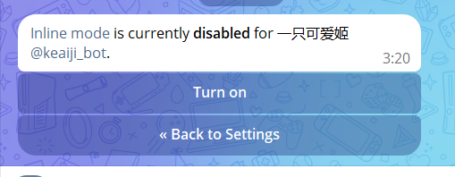
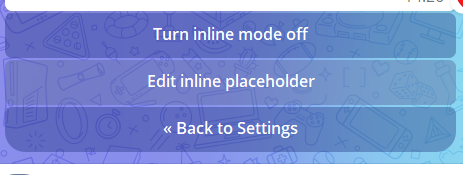

咕咕~ 进度 99%（简单的直接略过）⚓︎
 用户功能 - 换绑与绑定的区别⚓︎
用户功能 - 换绑与绑定的区别⚓︎
换绑就是 本来有Emby, 只是TG号被封了, 可以自行换绑到当前账户
绑定则是 本来有Emby, 但是未绑定过TG, 现在需要绑定到TG
内连模式搜片⚓︎
怎么设置并使用？
@Botfather 选择你创建的 bot，进入一下页面点击 【Bot Settings】
点击 Inline Mode
点击 Turn On


点击如图按钮 Edit inline placeholder，回复：搜索Emby

服务器按钮 - Nezha探针的调用⚓︎
此处代码
没什么好说的, 把后台api_token拿到，然后 config.json 输入要监控的 id

{kind=link}
{kind=link}
{kind=link}
{kind=link}
{kind=link}
{kind=link}
{kind=link}
{kind=link}
{kind=link}
管理按钮 - 定时任务⚓︎
{kind=link}
- 其在 config.json模板 已经说的很明白,请仔细阅读
- 此处唯一需要注意的是 为了记录用户观看数据, 请下载 emby插件 playback reporting 此处第一张图
WebHook - 追剧推送⚓︎
-
添加第一个Webhook
名称: 随便填，例如：favorites
URL: 填入
http://192.168.2.147:8838/emby/webhook/favorites?token=这里填入bot的token将ip地址和端口替换成自己bot所在的地址和端口，token填入bot的token，如图：事件类型选中：添加到“最爱”，从“最爱”中移除，然后点击存储，如图：
-
添加第二个Webhook
名称: 随便填，例如：medias
URL: 填入
http://192.168.2.147:8838/emby/webhook/medias?token=这里填入bot的token将ip地址和端口替换成自己bot所在的地址和端口，token填入bot的token，如图：
事件类型选中：新媒体已添加，然后点击存储，如图：

-
配置完成后可实现如下效果
{kind=link}
{kind=link}
{kind=link}
{kind=link}
{kind=link}
WebHook - 客户端过滤⚓︎
-
添加 Webhook
名称：随便填，例如：client-filter
URL: 填入
http://192.168.2.147:8838/emby/webhook/client-filter?token=这里填入bot的token将ip地址和端口替换成自己bot所在的地址和端口，token填入bot的token，如图：
事件类型选中：播放：开始，暂停，取消暂停，停止，用户：已验证用户身份，无法验证用户身份，然后点击存储，如图：
配置 config.json模板 客户端过滤，配置完成后可实现如下效果

{kind=link}
{kind=link}
其他设置各点解释⚓︎
Info
- 导出日志 [一般]
- 设置探针 按格式,可以直接在bot设置探针 [鸡肋]
- emby线路 , bot内设置显示给用户的线路, 需要markdowm效果请开config.json修改 [鸡肋]
- 显示、隐藏指定媒体库 为用户们指定他们可以隐藏和显示的媒体库
- 注册码续期 开启时使用注册码可以叠加时长，否则不允许使用
- 开关充电， 在初始键盘下多加一个按钮，点击能跳转指定网页
- 退群封禁， 顾名思义，用户退群默认删除账户，开启此项时直接封禁用户不允许加群
- 自动看片结算， 当定时任务中，看片榜结算时，给予 [观看时长 + 额外排名奖励分数]，分数仍有待商榷，重要可先不开